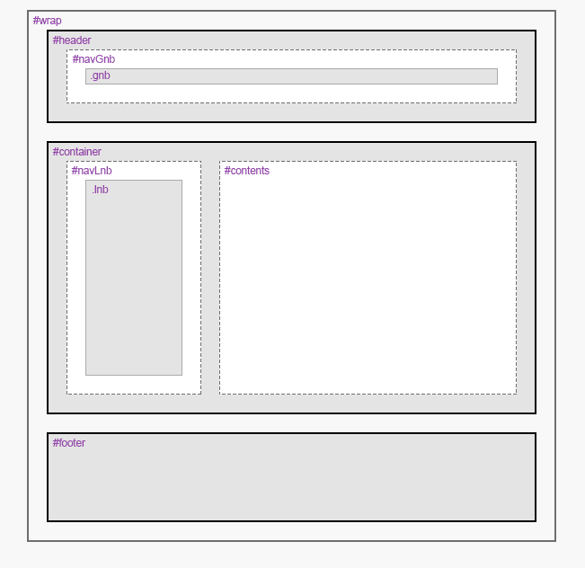
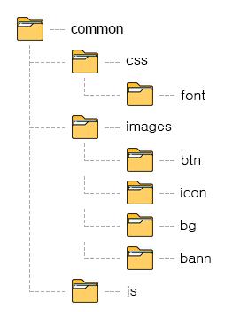
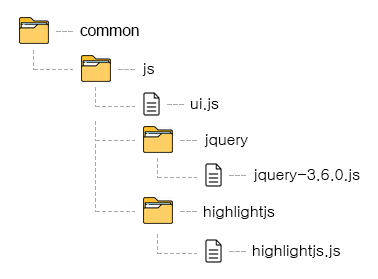
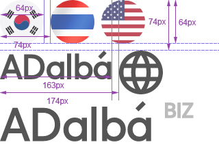

작업규칙
작업의도
- 통일성 : 작업자가 다수여도 한사람이 작성한 것처럼 보이는 코드를 지향한다.
- 실용성 : HTML 표준을 준수하고 시맨틱한 문서를 작성하기 위해 노력하되 추가적인 노력이 필요하지 않은 범위내에서 간결한 코드를 사용한다.
기본정책
크로스브라우징
- 마크업 브라우저 기준은 Chrome과 IE(Internet Explorer) 11+를 기준으로 한다. 단, 파이어폭스, 사파리, 오페라에서 UI가 정상적으로 보이는지 확인한다.
PC 기준
- 사이트 유저가 설계사인 경우 모니터의 해상도는 1280 x 1024를 기준으로 하며 최적화 해상도는 브라우저 요소를 제외한 1280 x 854로 한다.
Tablet 기준
Mobile 기준
네이밍룰
기본규칙
- 이름은 소문자, 숫자, 언더바(_)로 작성한다.
- 이름의 시작은 소문자로 시작한다.
- style은 외부선언(css파일) 방식을 기본으로 하고, 특수한 상황에서만 내부선언, 인라인 선언 방식을 사용한다
레이아웃 작성규칙
- 레이아웃을 구성하는 요소(영역별 최상위)에는 id값으로 작성한다.
| 영역 |
설명 |
| #wrap |
HTML문서 최상위 |
| #header |
상단영역 |
| #container |
중간영역 |
| #navGnb | #navLnb |
네비게이션 부모영역
#gnb와 #lnb 영역에 각각 #nav_gnb, #nav_lnb로 감싸준다. |
| .gnb |
글로벌 네비게이션 영역 |
| .lnb |
로컬 네비게이션 영역 |
| #contents |
컨텐츠 영역 |
| .ad_ |
광고(배너) 영역 |
| .path_ |
breadcrumbs 영역 |
| #footer |
하단영역 |
그림1) 레이아웃 구조

- 레이어팝업의 레이아웃을 구성하는 요소(영역별 최상위)에는 modal로 시작하는 id값으로 작성한다.
| 영역 |
설명 |
| #modalWrap |
팝업영역 최상위 |
| #modalHeader |
상단영역 |
| #modalContainer |
중간영역 |
| #modalContents |
컨텐츠 영역 |
| #modalFooter |
하단영역 |
- 윈도우팝업 레이아웃을 구성하는 요소(영역별 최상위)에는 pop으로 시작하는 id값으로 작성한다.
| 영역 |
설명 |
| #popWrap |
팝업영역 최상위 |
| #popHeader |
상단영역 |
| #popContainer |
중간영역 |
| #popContents |
컨텐츠 영역 |
| #popFooter |
하단영역 |
- 레이아웃에 디자인 속성을 추가/변경하려면 id와 동일한 이름으로 class를 사용한다.

- 컨텐츠 영역에는 페이지별 유니크한 클래스명을 작성해준다.
예) 상담목록
| 작성법 |
설명 |
<div id="contents" class="cnsl_lst"></div>
|
id="contents" 영역에 화면을 구분할수있는 클래스명을 작성해준다. |
클래스 작성규칙
- 이름은 가시적으로 이해할 수 있도록 작성한다.
- 이름은 두 단어의 조합을 언더바(_)로 구분하여 작성한다.
| 잘못된 예 |
올바른 예 |
| cnslLst |
cnsl_lst |
- 개체형태 중 아래의 경우의 한해 축약어로 작성한다.
| 기본형 |
축약어 |
| content |
cont |
| layer |
lyr |
| window popup |
pop |
| category |
ctgr |
| group |
grp |
| type |
typ |
| box |
bx |
| list |
lst |
| title |
tit |
| text |
txt |
| tab |
tab |
| accordion |
accrdn |
| search |
srch |
| icon |
icn |
| tooltip |
tooltip |
| calculator |
calc |
- 기타 다른 개체의 이름은 축약하지 않고 작성한다.
요소 클래스 작성규칙
- Element(요소)에 class사용시 아래의 경우의 한해 축약어로 작성한다.
| 기본형 |
축약어 |
| button |
btn |
| table |
tb |
| checkbox |
chk |
| radio |
rdo |
| form |
frm |
| textarea |
txtara |
| input type="text" |
ip_txt |
| input type="password" |
ip_psswd |
| input type="file" |
ip_file |
| input type="number" |
ip_num |
| input type="tel" |
ip_tel |
| input type="search" |
ip_srch |
| select |
selbx |
- 모든 요소에는 class명을 반드시 작성한다. 단, 종속적인 구조를 갖는 요소에는 예외로 한다.
예) 종속적인 요소 : ul, ol, li | table, thead, tbody, tfoot, tr, th, td | dl dt dd | fildset, legend 등
| 잘못된 예 |
올바른 예 |
<ul>
<li></li>
</ul>
|
<ul class="info_bx">
<li></li>
</ul>
or
<ul class="info_bx">
<li class="info_txt"></li>
<li class="info_txt"></li>
</ul>
|
단위
- 기본 단위는 rem으로 사용한다. px단위로 수치값을 가시화하기 위해 html에 font-size:10px로 작성 후 사용한다.
/* reset.css */
html{font-size:10px;}
/* style.css */
div{font-size:1.2rem;} /* font-size:12px; 와 동일 */
- background나 백분율로 처리해야 하는 경우 %를 사용할 수 있다.
- 레이아웃 스타일 조정에 한해 vw, vh를 사용할 수 있다.
HTML 작성규칙
HTML 작업정보 작성
- 파일 최상단에 작업자의 영문 아이디와 페이지 위치, 파일 생성 날짜를 기입하여 작업자의 히스토리를 남겨 협업에 활용한다.
- 페이지, 윈도우팝업, 레이어팝업에는 각각 의미있는 페이지 고유의 클래스를 부여하여 개별적인 css 부여시 활용한다.
<!------------------------------------
@ Author : je0101
@ Path : 영업시스템 > 계약 : 리스트
@ Date : 20220415
-------------------------------------->
문서형식
- 브라우저 Document Type은 HTML5 DOCTYPE으로 작성하고, 아래 html문서를 기본형식으로 갖는다.
<!DOCTYPE html> <!-- HTML5 DOCTYPE -->
<html lang="ko"> <!-- lang 속성을 반드시 명시 -->
<head>
<meta charset="UTF-8"> <!-- 문자 인코딩은 유니코드 기반으로 하위 호환이 뛰어나 가장 널리 쓰이는 UTF-8을 권장 -->
<meta http-equiv="X-UA-Compatible" content="IE=edge"> <!-- 인터넷 익스플로러에서 매번 다르게 렌더링 되는 것을 방지하기 위해 최신 Edge모드를 사용 -->
<meta name="viewport" content="width=device-width, initial-scale=1.0"> <!-- viewport는 기본 형식을 사용 -->
<!-- 모바일의 경우 리사이징 방지 및 디바이스 너비를 최대로 갖는 meta형식을 기본으로 함. -->
<!-- <meta name="viewport" content="width=device-width, initial-scale=1.0, maximum-scale=1.0, user-scalable=no"> -->
</head>
<body>
</body>
</html>
기본규칙
- 마크업의 중첩이 깊어질수록 자식요소의 들여쓰기는 Tab(space 2칸)으로 설정한다.
- 태그 및 속성은 소문자로 작성한다.
- 속성을 정의할 경우에는 ""(큰 따옴표)를 사용한다.
- ID값은 카멜표기법을 사용한다.
| 잘못된 예 |
올바른 예 |
<input type="text" id="female_name">
|
<input type="text" id="femaleName">
|
태그 닫기
- 닫는 태그가 선택적이라도 생략하지 않는다. ( 예: <li></li>, <body></body> )
- 단일 태그에서는 슬래시(/)를 생략한다.
들여쓰기 예외
- <html>의 자식 요소인 <head>, <body>
- <body>의 자식 요소
<!doctype html>
<html lang="ko">
<head>
</head>
<body>
<div id="wrapper">
</div>
</body>
</html>
<table>
<caption>...</caption>
<colgroup>
<col>
</colgroup>
<thead>
<tr>
<th>...</th>
<th>...</th>
</tr>
</thead>
<tbody>
<tr>
<td>...</td>
<td>...</td>
</tr>
</tbody>
</table>
구조, 표현, 동작의 분리
- 문서의 구조(HTML)와 표현(CSS), 동작(script) 언어를 본래의 목적에 맞게 최대한 분리한다. 단 스타일 제어가 어려운 엘리먼트는 예외로 한다.
스타일 제어가 어려운 엘리먼트
- 자식 엘리먼트 태그가 한정적이거나(ex. table) 스타일 제어에 한계를 가진 엘리먼트(ex. select)가 컴포넌트의 루트 역할로 쓰일 땐 나중에 발생할 유지보수를 고려하여 엘리먼트로 감싸는 것을 권장한다.
- input[type="text"], select 엘리먼트의 경우 너비의 고정폭 지정을 허용한다.
- 테이블 셀의 경우 다양한 너비의 고정폭을 지닐 수 있는데 이것을 모두 CSS로 지정하는 것은 기대했던 효과에 대한 이점이 없으므로 예외의 경우를 허용한다.
- 회원가입 폼의 입력 필드처럼 너비, 높이가 유동적이라면 불필요한 클래스 생성을 막기 위해 인라인 스타일로 제어한다.
<!-- Bad -->
<input type="text" class="ip_txt ip_txt_width120">
<input type="text" class="ip_txt ip_txt_width180">
<!-- Good -->
<input type="text" class="ip_txt" style="width:120px">
<input type="text" class="ip_txt" style="width:180px">
table 엘리먼트 사용 방법
- table 엘리먼트의 border 값은 클래스를 지정하여 사용한다.
엘리먼트의 속성 지정 순서
- 엘리먼트의 기본 속성을 우선 지정한다.
- 선택자로 사용하는 id, class 속성을 엘리먼트의 기본 속성 다음으로 선언한다.
- 콘텐츠를 설명하는 alt, title 속성 그리고 예외로 지정하는 style은 가장 뒤에 선언한다.
A 엘리먼트
<a href="#" target="_blank">인쇄하기</a>
- href 속성의 값은 #으로 한다. 앵커 기능이 있다면 해당 엘리먼트의 id값을 작성한다.
- 링크의 목표가 명확하지 않은 경우 title 속성의 값으로 부가적인 설명을 제공한다.
- 다운로드 : [title="파일명+파일확장자 다운로드"]
Img 엘리먼트
<img src="img.gif" alt="대체텍스트">
- 유지보수의 편의성을 위하여 width, height 속성은 사용하지 않는다.
- 이미지 맵 사용을 지양한다.
- 사이트 유저가 외부 유저일 경우 대체 텍스트를 기입한다.
모바일 환경에서의 Input 엘리먼트
- 모바일 환경일 경우 title은 사용하지 않는다
- type 속성을 적극적으로 사용하여 사용자에게 보다 친화적인 양식을 제공한다.
- 일반 : type="text"
- 이메일 : type="email"
- 검색 : type="search"
- 인터넷 주소 : type="url"
- 숫자 : type="number"
- 전화번호 : type="tel"
Textarea 엘리먼트
- CSS를 정상적으로 불러오지 못하는 상황에서도 사용에 문제가 없도록 cols, rows의 애트리뷰트값은 각각 최소 30, 5 이상이 되도록 선언한다.
<textarea cols="30" rows="5">...</textarea>
Button 엘리먼트
<button type="button">열기</button>
<button type="submit">전송</button>
Iframe 엘리먼트
<iframe src="about:blank" title="빈프레임"></iframe>
- iframe 사용은 페이지 성능에 영향을 주므로 가급적 사용하지 않는다. 유투브와 같은 동영상컨텐츠에 한하여 사용한다.
- align, frameborder, longdesc, marginheight, marginwidth, scrolling등의 속성은 html5에서 지원되지 않으므로 사용시 참고한다.
* 참고 : w3schools > 태그
애니메이션
- 동작 효과는 콘텐츠를 자연스럽게 만들어주지만, 장시간 컴퓨터를 사용하는 경우 눈에 쉽게 피로감을 주므로 요건에 맞게 사용한다.
Heading
- 섹셔닝 요소와 헤딩 요소를 이용하여 문서 개요를 논리적으로 구성한다.
- 섹셔닝 요소(section, article, nav, aside)에는 헤딩 요소를 명시적으로 사용한다.
- 명시적 헤딩 기법은 h1 요소를 한 페이지에 한 번 사용한다.
- 헤딩 요소만으로 문서 개요를 파악할 수 있어야 한다.
Boolean 정의
- Boolean 속성은 값을 따로 명시하지 않는다.
| 잘못된 예 |
올바른 예 |
| <input type="text" disabled="true"> |
<input type="text" disabled> |
| <input type="checkbox" checked="true"> |
<input type="text" checked> |
|
<select>
<option value="1" selected="true">1</option>
</select>
|
<select>
<option value="1" selected>1</option>
</select>
|
목적에 맞는 HTML 태그 사용
- html은 의미에 맞는 태그(Tag)로 시멘틱 마크업(Semantic Markup)을 한다.
* 참고 : 시맨틱_웹
엔티티 사용
- <, >, &에 한해 엔티티 이름(<, >, &)을 사용한다. 기타 다른 특수문자는 엔티티를 사용하지 않는다.
주석
- 주석의 시작은 S:로 종료는 E:으로 시작하고 주석내용은 영문일 경우 대문자를 사용한다.
<body>
<!-- S:WRAP -->
<section id="wrap">
<!-- S:HEADER -->
<div id="header"></div>
<!-- E:HEADER -->
<!-- S:CONTAINER -->
<div id="container">
<!-- S:NAVIGATION -->
<div id="nav_lnb"></div>
<!-- E:NAVIGATION -->
<!-- S:CONTENTS -->
<div id="contents"></div>
<!-- E:CONTENTS -->
</div>
<!-- E:CONTAINER -->
<!-- S:FOOTER -->
<div id="footer"></div>
<!-- E:FOOTER -->
</section>
<!-- E:WRAP -->
</body>
- UI에서 개발단에 전달 또는 요청해야 하는 성격의 주석은 <!-- S:[전달 | 요청] 이름 날짜 : 전달 내용 --><!-- E:[전달 | 요청] 이름 날짜 : 전달 내용 -->
<!-- [요청] 박은정 2022.04.18 : 개발작업 시 삭제 해주세요. -->
<div class="test">테스트 영역</div>
<!-- S:[요청] 박은정 2022.04.18 : 상품 케이스 추가 건 -->
<div> class="test">테스트 영역</div>
<!-- E:[요청] 박은정 2022.04.18 : 상품 케이스 추가 건 -->
자바스크립트 작성
- 자바스크립트는 html 요소에 직접 이벤트 선언하는 방식은 지양한다.
| 잘못된 예 |
올바른 예 |
<button type="button" onclick="clickHandler">Click</button>
|
<button type="button" id="click_btn">Click</button>
let btn = document.querySelector("#click_btn");
btn.addEventListener("click",function(){
alert("click!!!");
});
|
외부파일 정의
- <link>와 <scirpt>에 type을 정의하지 않는다.
| 잘못된 예 |
올바른 예 |
<link type="text/css" rel="stylesheet" href="./css/reset.css">
<script type="text/javascript" src=".common/js/ui.js"></script>
|
<link rel="stylesheet" href="./css/reset.css">
<script src=".common/js/ui.js"></script>
|
- css파일은 상단 <head></head>안에 작성
- javascript파일은 하단 </body>바로 위에 작성한다.
<!DOCTYPE html>
<html lang="ko">
<head>
<meta charset="UTF-8">
<meta http-equiv="X-UA-Compatible" content="IE=edge">
<meta name="viewport" content="width=device-width, initial-scale=1.0">
<!-- css 작성영역 -->
<link ref="stylesheet" href="style.css">
</head>
<body>
<!-- js 작성영역 -->
<script src="ui.js"></script>
</body>
</html>
CSS작성규칙
CSS 작업정보 작성
@charset "utf-8";
/* -----------------------------
* Author : je0101
* File : Layout.css
* Version : 1.0.0
/* ----------------------------- */
/* ----------- Index -----------
* 1.Layout
- Gnb
- header
- Footer
* 2.Ui
- Tab
- Popup
* 3.Page
------------------------------- */
기본규칙
- 문서의 첫 줄에 HTML과 동일한 인코딩을 선언한다.
| 잘못된 예 |
올바른 예 |
| body{BACKGROUN-COLOR:#ff00ff} |
body{background-color:#ff00ff} |
- 공백이 포함된 폰트명, 한글 폰트명, 문자열 데이터 타입, filter 속성의 파라미터값은 작은 따옴표('')로 감싸며,
@charset선언시 또는 속성으로 선택자를 명시할 경우에만 큰 따옴표("")로 감싸고 그 외에는 따옴표를 사용하지 않는다.
| 잘못된 예 |
올바른 예 |
| body{font-family:돋움,sans-serif;} |
body{font-family:'돋움',sans-serif;} |
| @charset 'utf-8' |
@charset "utf-8" |
input[class*=ip_]
or
input[class*='ip_'] |
input[class*="ip_"] |
| content:"-" |
content:'-' |
| background:url("bg_dim") no-repeat 0 0; |
background:url(bg_dim) no-repeat 0 0; |
- 선택자 깊이는 4단계 이상 선언하지 않는다. 단, 부모 선택자를 표시해야 할 경우 꼭 필요한 경우에만 작성한다.
- 다중 선택자(Multi Class)를 사용할 경우 3단계 이상 선언하지 않는다.
- 레이아웃의 경우 flex속성을 사용하고, 여의치 않은 상황에서만 float속성을 사용한다.
공백
- 들여쓰기는 Tab(space2)문자를 사용한다.
- style 작성시 {} 닫힘괄호를 기준으로 개행처리 한다.
| 잘못된 예 |
올바른 예 |
.header_wrap{padding:1rem;} .header_wrap .logo{color:#fff;font-size:2.5rem;}
|
.header_wrap{padding:1rem;}
.header_wrap .logo{color:#fff;font-size:2.5rem;}
|
- 부모와 자식을 구분하는 경우를 제외하고 모든 개행과 공백을 제거한다. 단, 다중 선택자를 선언할 경우 ,(쉼표)를 기준으로 개행처리할 수 있다.
| 잘못된 예 |
올바른 예 |
.header_wrap {padding : 1rem;}
.header_wrap .logo{color : #fff; font-size : 2.5rem;}
|
/* 선택자와 대괄호 사이 */
.header_wrap{padding:1rem;}
/* :(콜론) 좌우사이, ;(세미콜론) 좌우사이 */
.header_wrap .logo{color:#fff;font-size:2.5rem;}
|
.header_wrap {
padding:1rem;
}
.header_wrap .logo,
.header_wrap .tit{
color:#fff;
font-size:2.5rem;
}
|
.header_wrap{padding:1rem;}
.header_wrap .logo,
.header_wrap .tit{color:#fff;font-size:2.5rem;}
or
.header_wrap{padding:1rem;}
.header_wrap .logo, .header_wrap .tit{color:#fff;font-size:2.5rem;}
|
a, button, label{outline:none;}
|
/* 다중 선택자 사이 */
a,button,label{outline:none;}
|
주석
- 큰 단락의 주석과 작은 단락의 주석을 작성해준다. 영문의 경우 큰 단락은 전체 대문자, 작은 단락은 단어의 첫번째 글자를 대문자로 작성한다. 작성방식은 아래와 같다.
예) 큰 단락(별 다섯개, 개행, 영문대문자, 한글작성 가능)
/*****
ELEMENTS
******/
-
예) 큰 단락(별 다섯개, 개행, 영문대문자, 한글작성 가능)
/* Table */
빈줄
/* Navigation */
.nav_wrap{padding:1.5rem;}
==> 빈줄
/*****
ELEMENTS
******/
/* Title */
.grp_tit{font-size:2.5rem;}
.ctgr_tit{padding-left:1rem;font-size:1.8rem;}
==> 빈줄
/* List */
.rule_lst{margin-bottom:2rem;padding-left:2rem;}
.rule_lst > li:before{display:inline-block;margin-right:0.5rem;content:"-";}
폰트
- 기본폰트는 맑은고딕으로 하되, 웹폰트를 우선 적용할 수 있다.
| 잘못된 예 |
올바른 예 |
| body{font-family:,'Malgun Gothic','맑은 고딕','Open Sans',sans-serif;} |
body{font-family:'Open Sans','Malgun Gothic','맑은 고딕',sans-serif;} |
| body{font-family:'Open Sans',dotum,"돋움",sans-serif;} |
body{font-family:'Open Sans','Malgun Gothic','맑은 고딕',sans-serif;} |
* 참고 : 네이밍룰 > 단위
속성 작성 순서
- 속성을 작성할 경우 노출여부, 위치를 나타내는 속성을 맨 앞에 작성하고
크기, 여백에 영향을 주는 속성은 다음으로, 나머지는 순서와 상관없이 마지막에 선언한다.
| 순서 |
대표 속성 |
| 1 |
display,visibility,overflow,float,position,top,right,bottom,left,z-index |
| 2 |
width(min,max),height(min,max),margin,padding,border |
| 3 |
background,font관련 등 |
| prefix |
* 벤더속성과 핵속성은 해당 속성 뒤에 선언
div{box-sizing:border-box;-webkit-box-sizing:border-box;-moz-box-sizing:border-box;} |
세미콜론(;)
마지막 선언된 속성에도 세미콜론(;)을 사용한다.
/* 잘못된 예 */
.class_name {margin-left:0;padding-left:10px}
/* 올바른 예 */
.class_name {margin-left:0;padding-left:10px;}
공통 선택자
'*' 공통 선택자는 웹 페이지의 성능을 저하를 가져오기 때문에 가급적 사용하지 않는다.
/* 잘못된 예 */
* {margin:0;padding:0}
축약 속성
- margin, padding 속성에 한해 개별 속성(*-top,*-right,*-bottom,*-left,)을 제한한다.
- 속기 작성방식 또한, 수치를 1개 또는 3개로 줄여 사용하지 않는다.
| 잘못된 예 |
올바른 예 |
|
margin-top:50px;
|
margin:50px 0 0 0;
|
|
margin-top:0;margin-right:auto;margin-bottom:0;margin-left:auto;
|
margin:0 auto;
|
|
margin:28px 30px 20px;
|
margin:28px 30px 20px 30px;
|
|
margin:15px;
|
margin:15px 15px;
|
확장
- 의미는 같으나 style이 다를경우 확장방식을 사용한다.
| 기본형 |
확장형 |
설명 |
| info_text |
info_text_typ1, info_text_typ2 |
종속 확장 class |
| selectbox |
selectbox1, selectbox2 |
독립 확장 class |
파일 분기
- css파일은 관리의 효율성을 위해 분기하여 관리한다.
- 초기화를 위한 style은 reset.css에 분기한다.
- 웹폰트를 사용할 경우 font.css에 분기한다.
- 그 외 css파일의 분기 기준은 GNB depth 1의 대메뉴를 기준으로 한다.
- 외부 라이브러리에 포함된 css의 경우 라이브러리 이름의 폴더를 생성한 후 관련 css를 해당폴더에 위치한다.
기타규칙
폴더
- 기본 폴더 구조는 다음 그림2와 같이 구성한다.
- 웹폰트를 사용할 경우, 폰트파일은 /css/font/ 폴더에 위치한다.
- 이미지는 각 특징에 따라 폴더에 위치한다. 필요시 구분이 되는 이름으로 폴더명을 추가 생성할 수 있다.
| 폴더명 |
설명 |
| images |
하위 이미지 폴더 및 공통이미지 |
| btn |
버튼 이미지 |
| icon |
아이콘 이미지 |
| bg |
배경 이미지 |
| bann |
배너 이미지 |
그림2) 폴더구조

JAVASCRIPT 파일
- 퍼블리싱관련 javascript는 common/js/ui.js (인터렉션 포함)에 작성한다.
- 외부 라이브러리를 사용할 경우 라이브러리 이름의 폴더를 생성한 후 관련 js파일을 해당폴더에 위치한다.
예) js파일생성 방식

이미지
- 이미지 확장자는 jpg, png, gif, svg를 사용할 수 있다.
- 이미지 확장자가 jpg나 png일 경우, 최적화 작업을 한다.
최적화도구) Tiny
- svg 이미지 사용시, url 인코딩 방식으로 사용한다. 인코딩 방식 사용 구분은 그림은 동일하나 색상 변경이 있는 이미지에 한해 사용한다.
인코딩도구) url-encoder
예) url encoding 기법
background:url("data:image/svg+xml,%3Csvg xmlns='http://www.w3.org/2000/svg' viewBox='0 0 32 32'%3E%3Cdefs%3E%3Cstyle%3E .cls-1,.cls-2%7Bfill:none%7D.cls-2%7Bstroke:%23c0c0c0;stroke-width:2px%7D %3C/style%3E%3C/defs%3E%3Cg %3E%3Cpath id='square' d='M0 0h32v32H0z' class='cls-1'/%3E%3Cg transform='translate(2 2)'%3E%3Cg class='cls-2'%3E%3Ccircle cx='11.5' cy='11.5' r='11.5'/%3E%3Ccircle cx='11.5' cy='11.5' r='10.5' class='cls-1'/%3E%3C/g%3E%3Cpath d='M0 0l8.824 8.824' class='cls-2' transform='translate(19.273 19.54)'/%3E%3C/g%3E%3C/g%3E%3C/svg%3E%0A")'%3E%3Cg class='cls-2'%3E%3Ccircle cx='11.5' cy='11.5' r='11.5'/%3E%3Ccircle cx='11.5' cy='11.5' r='10.5' class='cls-1'/%3E%3C/g%3E%3Cpath d='M0 0l8.824 8.824' class='cls-2' transform='translate(19.273 19.54)'/%3E%3C/g%3E%3C/g%3E%3C/svg%3E%0A) no-repeat 0 0;
- 자주 사용되는 공통이미지의 경우 sprite 기법을 사용한다.
- sprite 이미지의 경우 파일명의 시작을 sp_로 한다.
- sprite 기법으로 이미지 편집시, 그림간의 상하좌우 간격을 10px로 한다.
- 최상단, 최좌측에 배치된 그림은 상단, 좌측의 여백을 생략할 수 있다.
예) sprite 기법
- 모바일에 사용되는 sprite 이미지의 사이즈는 짝수여야 하며, 최상단, 최좌측을 기준으로 그림과의 간격이 반드시 짝수여야 한다.
예) 이미지사이트 : 320 * 218

- 이미지명은 언더바(_)를 구분자로 작성할 수 있다. 단, 마지막 숫자에는 사용하지 않는다.
- 같은 이름의 형태를 갖는다면 숫자부분을 다음 순서의 숫자로 작성한다.
- 이미지명은 확장자와 상관없이 순차적으로 생성한다.
- 이미지 이름은 아래와 같은 순서와 규칙을 준수하여 작성한다(조합의 규칙은 해당사항이 없는 경우 생략이 가능하다).
폴더명(+형태) + 방향 + 색상 + 숫자(두자리) + 상태
| 의미 |
이름 |
설명 |
| 방향 |
d |
down |
| u |
up |
| l |
left |
| r |
right |
| 색상 |
bu |
blue |
| n |
navy |
| w |
white |
| y |
yellow |
| o |
orange |
| r |
red |
| pu |
purple |
| g |
green |
| ga |
gray |
| b |
black |
예) 이미지명 작성
| 이름 |
설명 |
| icon_arr_l_bu01.gif |
폴더명+형태+방향+색상+숫자의 조합으로 파랑색 좌측 화살표 아이콘 첫번째 이미지를 표현 |
| icon_arr_l_bu02.gif |
icon_arr_l_bu01 이미지와 유형은 같으나 크기와 디자인이 다른 이미지의 경우 숫자를 카운트하여 생성 |
| tab_ga02_off.gif |
형태+색상+숫자+상태로 조합. 폴더명과 형태의 의미가 중복되어 축약하고, 방향을 결정짓는 요소가 없고 상태를 표현하는 이름으로 조합함. |
이미지 예약어
이미지 예약어
| 분류 |
파일명 |
설명 |
| 버튼 |
btn_ |
|
| 아이콘 |
icon_ |
아이콘 |
| 화살표 |
arr_ |
|
| 배경 |
bg_ |
|
| 비주얼 |
visual_ |
디자인 요소가 다수 포함된 아이콘 혹은 이미지 |
| 임시 |
temp_ |
관리자나 사용자에 의해 등록될 이미지 영역으로 기본코딩을 위한 임시이미지 |